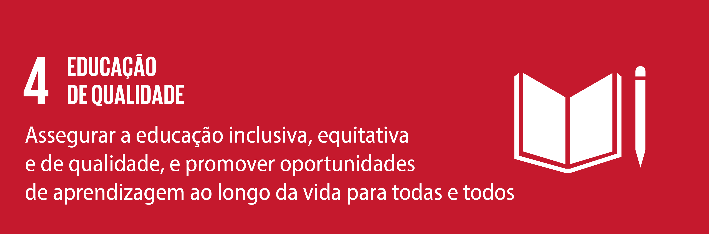

ODS 4

A ODS 4 visa promover um sistema educacional inclusivo e acessível, melhorando a qualidade da educação, desenvolvendo habilidades necessárias para o emprego e o empreendedorismo, e eliminando disparidades de acesso e resultados educacionais.
4.a Construir e melhorar instalações físicas para educação, apropriadas para crianças e sensíveis às deficiências e ao gênero, e que proporcionem ambientes de aprendizagem seguros e não violentos, inclusivos e eficazes para todos
link de acesso
Problema de Pesquisa
Como está a qualidade de ensino para adolescentes especiais nas escolas particulares de
Santa Cruz do Sul?
Hipóteses/Soluções Existentes
Criando um site, eu acho que isso poderá ajudar os adultos/responsáveis a
verem e entenderem como os alunos se sentem em relação ao método de ensino. E caso
a metodologia não agrade o aluno, os superiores podem alterar algo, fazendo com que o
aluno tenha uma melhor experiência.
Objetivo do Projeto
Criar um site, onde os alunos poderão deixar suas opiniões, feedbacks e sugestões sobre
a metodologia das escolas.